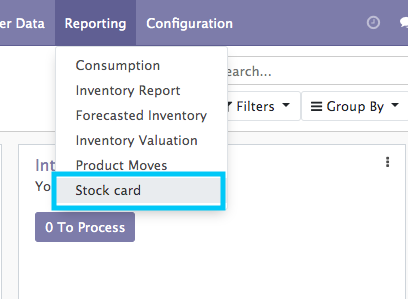
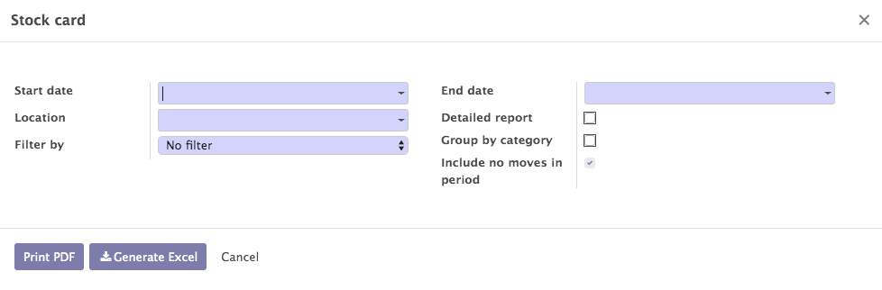
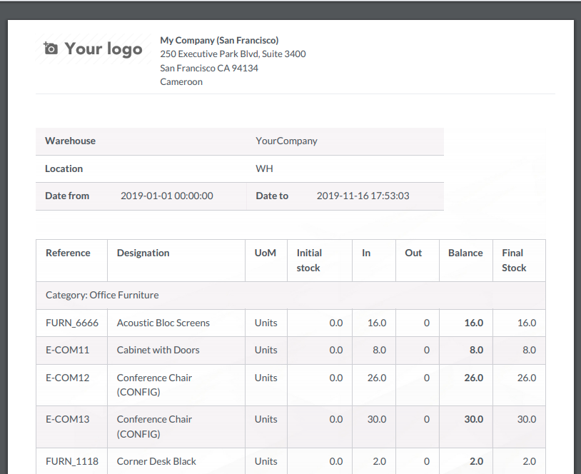
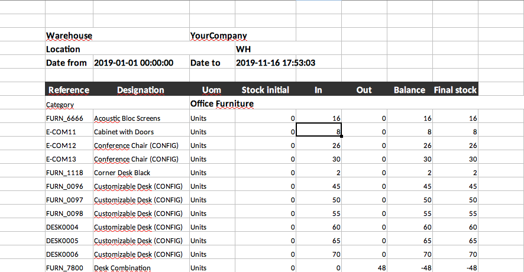
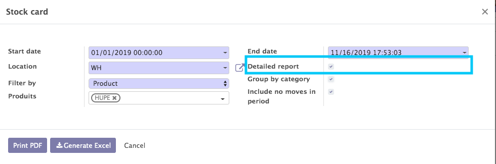
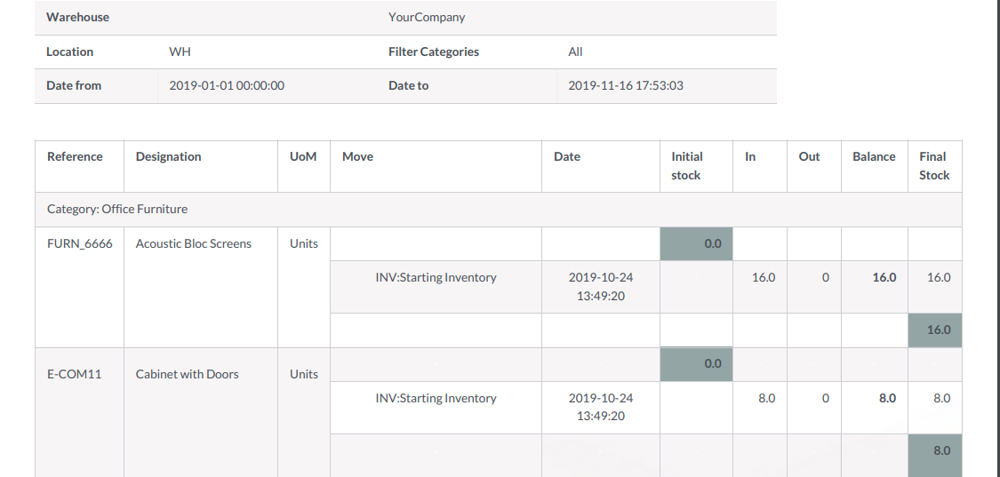

Print stock card (PDF & Excel)
This module allow you to print a stock card for a location wether it is for a internal, view, inventory, production or scrapped location. This module will give you the in, out and the balance of location between a period.
What is added by the module ? :
We add a menu "stock card" inside warehouse module who launch a wizard

In the wizard select the date for the period you desired, and the location, select the filter if you are interested then press print button

Here you have the simple stock card report, you have the initial stock, in, out, balance and the final stock in Excel and PDF


For the detailed stock card select the checkbox "detailed report"

In the detailed report you have in addition of simple report the picking reference and the date of the move (PDF & Excel)
